Historia del Campeonato MotoGP
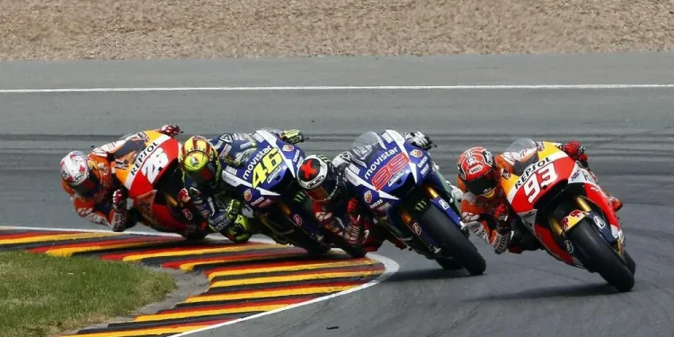MotoGP es la categoría reina del motociclismo mundial. Surgió oficialmente en 2002, reemplazando la categoría de 500cc con motos de 990cc, luego 800cc y finalmente 1000cc actuales.
Desde Giacomo Agostini en los 70, pasando por Wayne Rainey, Mick Doohan, Rossi, Lorenzo, Stoner y Márquez, la historia ha estado marcada por intensas rivalidades y avances tecnológicos espectaculares.
Con circuitos legendarios como Mugello, Assen, Phillip Island y Jerez, MotoGP se ha convertido en un fenómeno global, transmitiendo emoción a millones de aficionados en todo el mundo.
Marc Márquez

Marc Márquez nació en Cervera en 1993. Es uno de los pilotos más exitosos y espectaculares de la era moderna. Su debut en MotoGP en 2013 fue arrollador: ganó el campeonato en su primera temporada, siendo el más joven en lograrlo.
🏆 Con Honda, consiguió seis títulos mundiales de MotoGP: 2013, 2014, 2016, 2017, 2018 y 2019. Su estilo agresivo, su capacidad para frenar al límite y sus famosas "salvadas imposibles" lo convirtieron en ídolo y en un fenómeno técnico.
 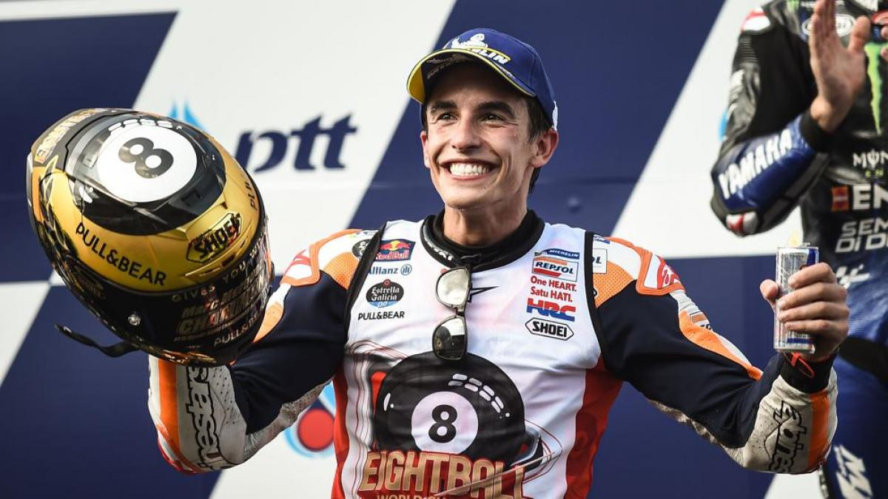
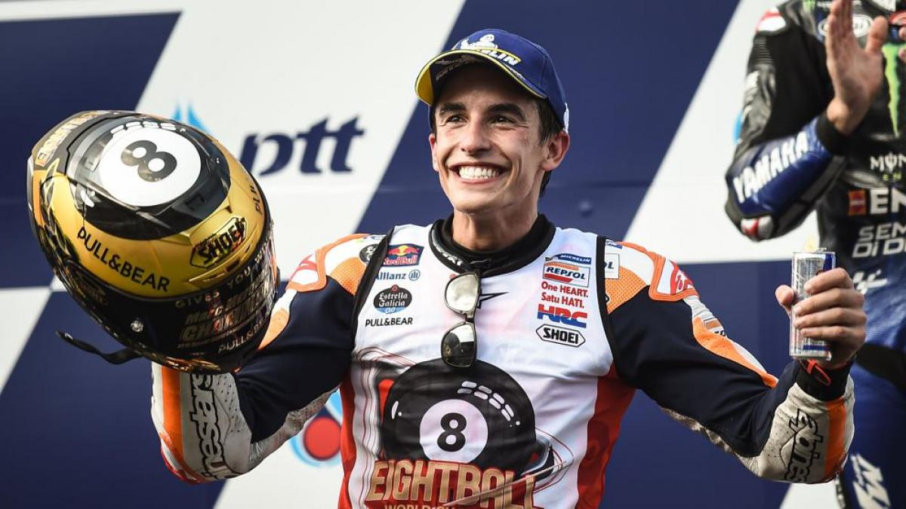
🏁Victorias más memorables: Sachsenring 2018 (dominó bajo presión), Phillip Island 2015 (duelo épico con Lorenzo y Rossi), y Tailandia 2019 (consagración matemática en la última curva).
🔥Momentos icónicos: Su duelo con Rossi en Argentina 2015, su histórica salvada en Valencia 2017, y el dominio absoluto del año 2019 con 12 victorias y solo un abandono.

En 2023 abandonó Honda tras años difíciles por lesiones, y en 2024 pilotó para Gresini Ducati. En 2025 firmó con el equipo oficial Ducati Lenovo, iniciando una nueva etapa de ambición y gloria potencial.
Jorge Lorenzo
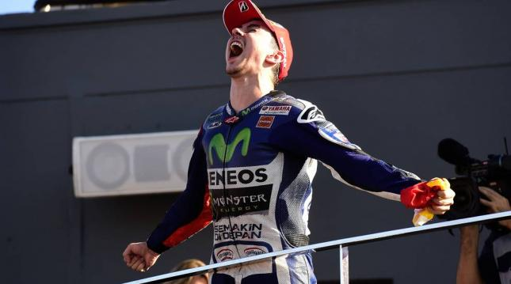Jorge Lorenzo, nacido en Palma de Mallorca (1987), fue uno de los pilotos más técnicos y precisos de su generación.
🏆 Títulos de MotoGP: 2010, 2012, 2015

🔥Victorias icónicas: Mugello 2009 (duelo con Rossi), Silverstone 2013 (con clavícula rota), y Valencia 2015 (final contra Rossi por el campeonato más polémico).
 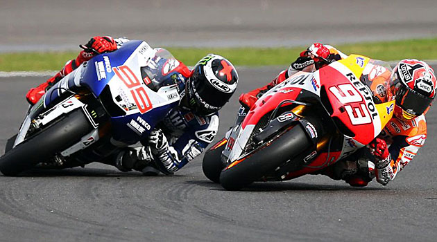
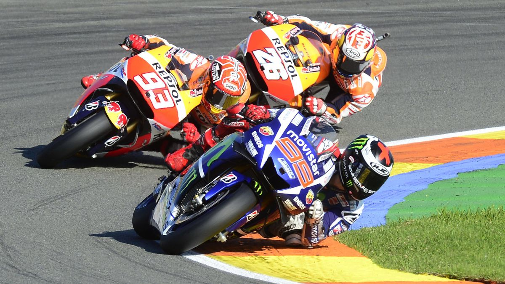
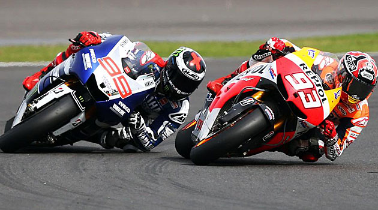
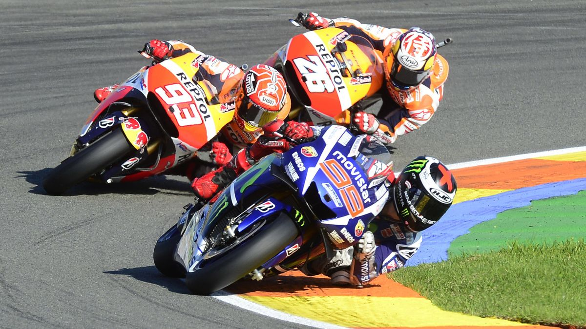
Con 47 victorias en MotoGP, su estilo suave y constante le dio grandes éxitos con Yamaha. También pilotó para Ducati y Honda antes de retirarse en 2019. Su rivalidad con Rossi definió una era.
Dani Pedrosa
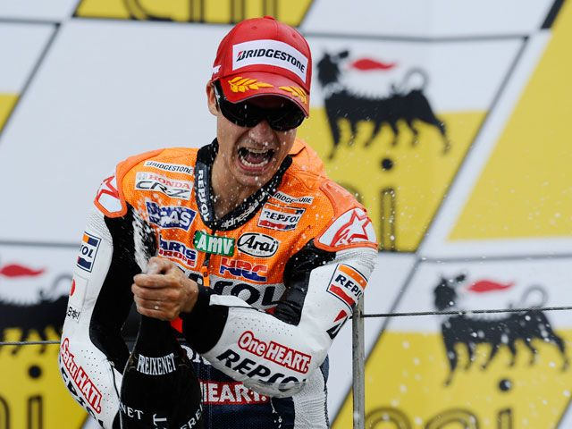🏆 Dani Pedrosa, nacido en Sabadell (1985), es considerado uno de los mejores pilotos que nunca ganó el título de MotoGP, aunque fue campeón mundial en 125cc (2003) y 250cc (2004, 2005).
🔥 Mejores momentos: Victoria en Estoril 2006 en su año de debut, dominación en Valencia 2012 y su increíble regreso en Misano 2023 como wild card con KTM.
 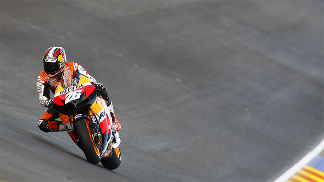
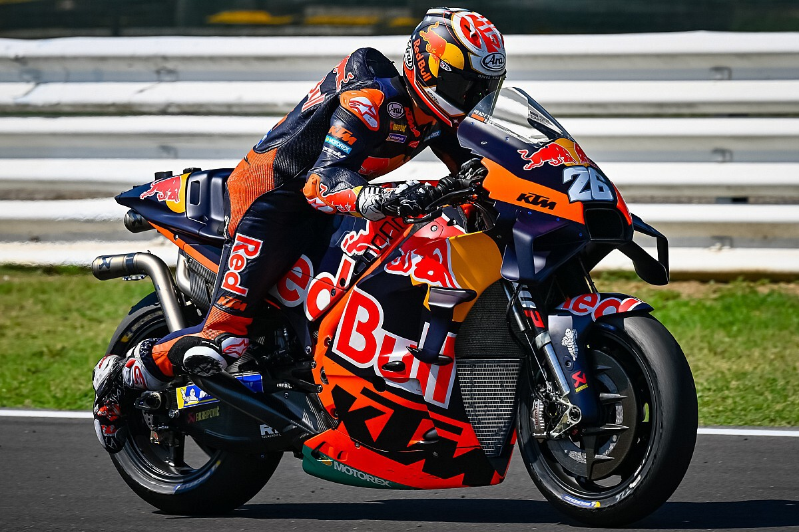
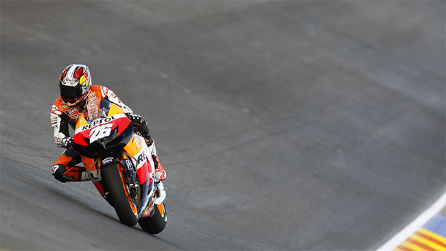
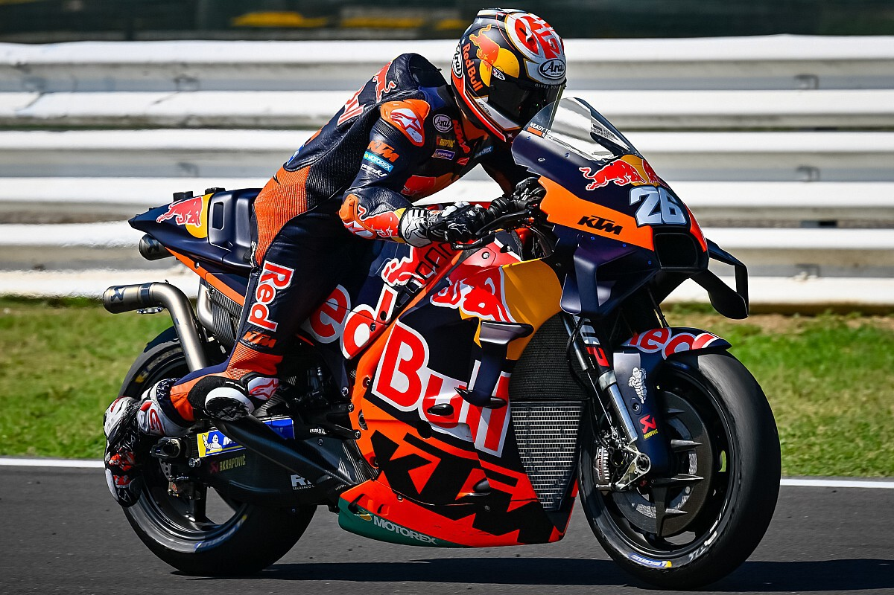
Con 31 victorias en MotoGP y más de 100 podios, fue vital en el desarrollo de motos para Honda y luego KTM. Su estilo fino y técnico lo hizo legendario entre pilotos y aficionados.

Valentino Rossi
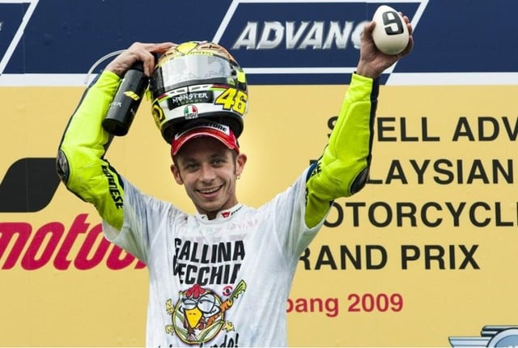Valentino Rossi, nacido en Tavullia (1979), es la leyenda viva del motociclismo. Con 9 títulos mundiales (7 en la categoría reina), es el piloto más popular de la historia.
🏆Títulos de MotoGP: 2001 (500cc), 2002, 2003, 2004, 2005, 2008, 2009
Su carisma, celebraciones únicas y longevidad lo hicieron ídolo mundial. Fundador del VR46 Racing Team, ha dejado huella en pista y fuera de ella. ¡Il Dottore es eterno!

Merchandising Oficial MotoGP
Descubre productos oficiales de tus pilotos favoritos: camisetas, artículos coleccionables y más.
Camiseta Marc Márquez
Precio: 45€
Camiseta Jorge Lorenzo
Precio: 40€
Camiseta Dani Pedrosa
Precio: 38€
Camiseta Valentino Rossi
Precio: 50€